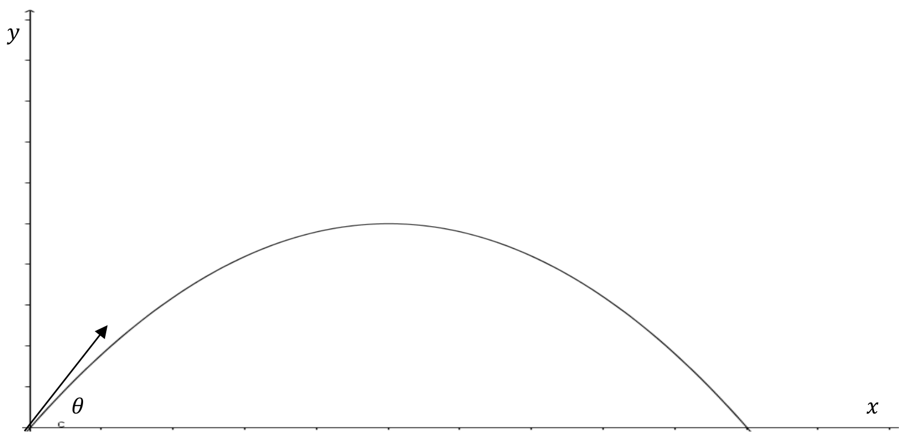

Suppose you throw a ball straight up into the air. Of course, it will go up and come back down. For the moment, let’s ignore air resistance. How high will the ball go? How long will it take the ball to hit the ground? What will be its impact velocity? Suppose you throw the ball up with twice the initial speed. Will the ball go twice as high? These were the types of questions that interested scientists like Galileo Galilei (1564-1642) who were some of the first scientists to systematically apply mathematics to science, specifically projectile motion.
Now that we have that acceleration due to gravity is constant, let’s look more into projectile motion. This fits into our discussion on integral calculus since we are given information about the acceleration and must integrate twice to recover the position of the ball. Specifically, let’s say that the ball is thrown upward with an initial velocity of \(19.6\) meters per second (roughly \(44\) miles per hour) and is released at a point \(2\) meters above the ground. How high will the ball go? When will it hit the ground? What will be the impact velocity?
To answer these questions, we must translate this problem into a mathematics problem. With this in mind, suppose the height of the ball is given by \(y=y(t)\) where \(y\) is measured in meters and \(t\) is measured in seconds. Then we have the following information \(\dfdxn{y}{x}{2}=-9.8\frac{\text{m}}{\text{s}^2}\text{,}\)\(\eval{\dfdx{y}{x}}{t}{0}=19.6\frac{\text{m}}{\text{s}}\text{,}\) and \(y(0)=2\text{m}\text{.}\)
Notice that the acceleration is constant (we are only looking a gravity and ignoring air resistance) and is negative (we’ve set up \(y\) so that up is the positive direction and down is the negative direction).
With this in mind, we want to find \(y\) when \(\dfdx{y}{t}=0\) (how high), \(t\) when \(y=0\) (when it hits the ground), and \(\eval{\dfdx{y}{t}}{y}{0}\) (the impact velocity).
For convenience, let \(v=\dfdx{y}{t}\) denote velocity, and \(a=\dfdx{v}{t}=\dfdxn{y}{t}{2}\) denote acceleration. Starting with our constant acceleration \(a=-9.8\text{,}\) we need to integrate to find \(v\) and \(y\text{.}\) Once we find these, then we can answer the questions posed.
We know that \(a=\dfdx{v}{t}=\dfdxn{y}{t}{2}=-9.8\) so
Thus the ball’s position is given by: \(y=-4.9t^2+19.6t+2\text{.}\)
Once we have these three equations of motion (acceleration, velocity, position) we can answer any question about the ball’s motion. In general, we suggest you find these three equations before trying to answer any questions about motion.
To find the maximum height, we set \(v=0\text{.}\) So we see that \(0=-9.8t+19.6
\text{.}\) Solving for \(t\) gives \(t=2 \text{ seconds}\text{.}\) Thus the ball’s maximum height is
and we see that both \(t=4.1\) and \(t=-0.1\) solve our equation. However snce the negative time would represent time in the past, we can say that the ball will hit the ground when \(t=4.1\) seconds. Thus the impact velocity is
The negative answer makes sense as the ball is traveling in the negative direction (given how we set up the \(y\) axis).
Drill2.5.
Suppose we throw two balls straight up. If the first has an initial velocity of \(v_0\) and the second has an initial velocity of \(2v_0\) will the maximum height of the second ball be twice the maximum height of the first. (Again, we ignore air resistance.)
Of course, the same principles will work in two dimensions as with a single dimension. All we do is treat the horizontal and vertical directions separately. With this in mind, the horizontal acceleration would be zero.
Problem2.6.
Consider the following projectile launched from the origin, with an initial velocity of \(v_0\) and angle of elevation \(\theta\text{.}\)

Figure2.7. Assuming that there is no air resistance and the acceleration due to gravity is \(-g\text{.}\)
Show that the maximum range occurs when \(\theta=\frac{\pi}{4}\text{.}\)
(d)
On Feb. 6, 1971, astronaut Alan Shepard pulled out a makeshift six-iron he smuggled on board Apollo \(14\) and hit two golf balls on the lunar surface, becoming the first, and only, person to play golf anywhere other than earth. Assuming that the gravity on the moon is \(1/6\) that of earth and that Shepard can hit the ball identically on the earth and the moon, and ignoring air resistance on the earth, would the ball go \(6\) times farther before it touches the ground on the moon than on the earth? Justify your answer.